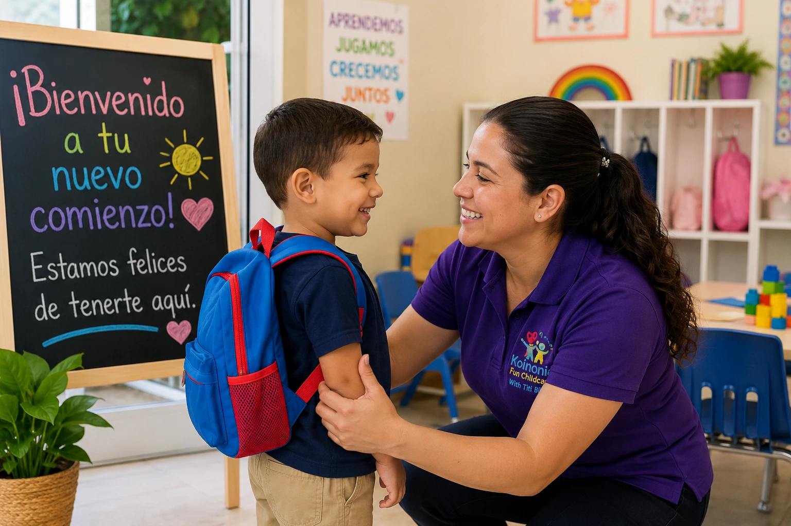

Cómo Preparar a tu Hijo para su Primer Día de Daycare
El primer día de daycare es un momento importante tanto para los niños como para los padres. Es normal sentir emoción, nervios e incluso algo de ansiedad. La buena noticia es que una preparación adecuada puede ayudar a que la transición sea mucho más positiva para toda la familia.

1. Habla sobre el daycare con anticipación
Algunos días antes del inicio, conversa con tu hijo sobre el daycare de manera positiva. Explícale que conocerá nuevos amigos, realizará actividades divertidas y estará rodeado de adultos que cuidarán de él.
2. Visiten el lugar antes del primer día
Si es posible, realiza una visita previa. Familiarizarse con el entorno ayuda a reducir la incertidumbre y permite que el niño se sienta más cómodo cuando llegue el gran día.
3. Mantén una rutina consistente
Los niños se sienten más seguros cuando tienen horarios predecibles. Intenta establecer horarios regulares para dormir, despertar y comer algunos días antes del inicio del programa.
4. Prepara juntos sus pertenencias
Involucra a tu hijo en la preparación de su mochila, ropa o artículos personales. Esto puede ayudarlo a sentirse parte del proceso y aumentar su entusiasmo.
5. Despídete con tranquilidad
Aunque pueda ser difícil, evita despedidas largas. Un abrazo, una sonrisa y una despedida segura transmiten confianza y ayudan al niño a adaptarse más rápidamente.
6. Ten paciencia durante el proceso
Cada niño se adapta a su propio ritmo. Algunos se sienten cómodos desde el primer día, mientras que otros necesitan más tiempo. Lo importante es brindar apoyo y mantener una actitud positiva.
Reflexión Final
El primer día de daycare marca el inicio de nuevas experiencias, amistades y oportunidades de aprendizaje. Con preparación, amor y paciencia, esta transición puede convertirse en una experiencia enriquecedora para toda la familia.
¿Buscas un ambiente cálido para tu hijo?
En Koinonia Fun Childcare acompañamos a cada familia durante el proceso de adaptación para que los niños se sientan seguros, felices y confiados desde el primer día.